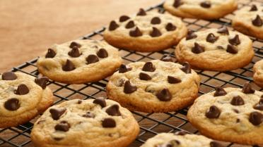

American Cookies

Ingredienten
- 130 g boter
- 250 g pure chocolade
- 190 g bruine suiker
- 220 g bloem
- 1 eieren
- 1 vanillestok
- 1 el melk
- 1 theelepel bakpoeder
Bereiding
- Snij de malse boter in kleine blokjes en meng ze met de suiker door elkaar. Dat kan je doen met een mixer of keukenrobot. Snij de vanillestok in twee. Schraap er de zaadjes uit en meng deze onder het mengsel. Voeg al kloppend het ei toe. Roer er de melk door. Zeef de bloem en het bakpoeder samen en meng het dan onder het beslag. Meng er de stukjes chocolade onder.
- Verwarm de oven op 180°C. Bedek een bakplaat met boterpapier. Leg afgestreken lepels deeg op het bakpapier. Laat voldoende afstand tussen de koekjes. Druk ze met een vork een beetje plat en bak ze vervolgens 20 minuten in de oven op 180°C goudgeel. Laat ze afkoelen.